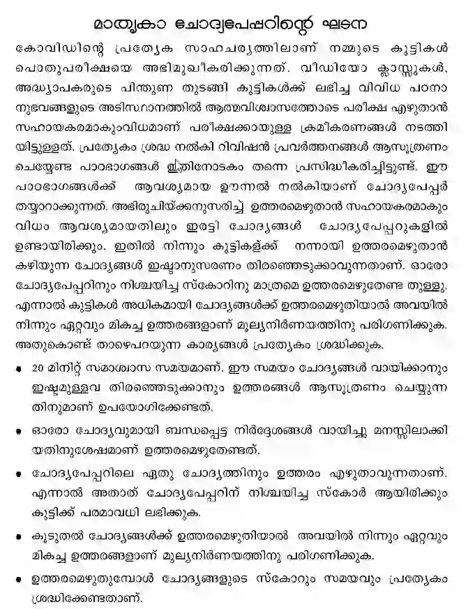

SSLC – (Based on Latest syllabus)
Focus Area Study Materials, Notes, and Questions for SSLC Exam 2021
Complete notes & Question of all chapters
Important area
Self Evaluation
Chapter-wise questions & answes
Complete notes & Question of all chapters
Self Evaluation
Chapter-wise questions & answes
Complete notes & Question of all chapters
SSLC - Grammer
Self Evaluation
Text book - Focus Area
Chapter-wise Question & notes
Focus Area - complete notes
Self-Evaluation
Chapter wise Notes & Questions
Chapter-wise Questions
Self-Evaluation
Chapter wise Notes & Questions
Self-Evaluation
Chapter-wise Questions & Notes
NOTES
Important - Maps
Self-Evaluation
Chapter-wise Question & Notes
Practice Questions
Self - Evaluation
Quick - Revison
NOTES
Chapter-wise questions
Chapter-wise questions
Chapter-wise questions
Chapter-wise questions
NOTES
Question Pattern for SSLC 2021 with Focus Areas
Education Department yet to finalize the question pattern for SSLC exam 2021. As per the details available now, all questions will have options. For the 40 mark examination, will provide you with questions for 80 marks, from that 75% of questions will be taken from Focus Areas. I.e., 60 mark questions will come from focus areas. Students will get the option to answer all the questions. If you get more than 40 marks, it will be considered 40/40, i.e., 100%.
The same pattern applies to subjects with 80 marks also. With the options, 160 mark questions will be asked, which will take 120 mark questions from the focus areas.
Its means were concentrating on the focus areas, and you can secure 100% marks in the upcoming SSLC examinations.
MALAYALAM I & II Important Portions for SSLC Exam 2021

Arabic Important Portions for SSLC Exam 2021

Sanskrit Important Portions for SSLC Exam 2021

Urdu Important Portions for SSLC Exam 2021

ENGLISH Important Portions for SSLC Exam 2021

HINDI Important Portions for SSLC Exam 2021

SOCIAL SCIENCE Important Portions for SSLC Exam 2021
ENGLISH MEDIUM
| Unit Name | Focus Areas |
| Revolutions that influenced the world. | American War of Independence. French Revolution. Russian Revolution |
| Struggle and Freedom. | Early struggles of Gandhiji. Non-Cooperation movement and Khilafat Movement. Poorna Swaraj and Civil Disobedience movement. The British Quit India. Subhash Chandra Bose. |
| India After Independence | Integration of Princely states. Achievement in the field of Science and Technology Education, The Foreign Policy of India., |
| Seasons and Time | Apparent movement of the sun and seasons. Rotation, Time calculation, Greenwich Mean Time (GMT), Standard Time, Indian Standard Time (IST), International Date Line. |
| India is the land of diversity | Himalaya, Trans Himalaya, Eastern High Land. Importance of Northern Mountain Range. Himalayan Rivers. Peninsular Rivers. Peninsular Plateau. Eastern coastal plain. Western coastal plain. Map (mountains, rivers, plateaus |
| Public Administration | Public Administration and its significance. Bureaucracy and it’s features. Indian Civil Service. E-governance. |
| Human resource development | Human Resource Qualitative features of Human resource Education and Human resource development. Health, Human resource development. |
MALAYALAM MEDIUM

PHYSICS Important Portions for SSLC Exam 2021
English Medium
| Unit Name | Focus Areas |
| 1. Effect of electric current | Energy change in electrical instruments Heating effect of electric current Jule’s Law Electric power Related mathematical problems Electric heating instruments Safety fuse Parallel and series combination of resistance and related problems light effect of electric current Filament lamps |
| 2. Magnetic effect of electric current | Magnetic field around a current carrying conductor Solenoid Right hand thump rule Magnetic field around a solenoid- magnetic polarity Factors affecting the strength of the magnetic field Motor principle working of a DC motor Moving coil loudspeaker- Structure and working. |
| 3. Electromagnetic induction | Electromagnetic induction Factors affecting induced emf Currents in AC generator DC generator and cell- characteristics and a graphical representation AC and DC generator-Structure and working Self-induction Mutual induction Transformers-Structure and working Moving coil microphone Power transmission in high voltage. Electric shock-Safety precautions and first aid. |
| 4. Reflection of light | Reflection Laws of reflection Characters of image formed in concave mirror and convex mirror Mirror equation Magnification and related problems New Cartesian sign convention |
| 5. Refraction of light | Refraction Relation between optical density and speed of light Total internal reflection Lenses- technical terms Image formation Ray diagrams Characters of image. |
| 6. Vision and the world of colours | Dispersion Recombination of colours the formation of the rainbow the persistence of vision Scattering of light the relation between wavelength of colours and scattering. |
| 7. Energy sources | Fossil fuels-coal CNG, LNG, LPG. LPG and safety green energy brown energy Energy crisis- reasons and solutions |
Malayalam Medium

CHEMISTRY Important Portions for SSLC Exam 2021
ENGLISH MEDIUM
| Unit Name | Focus Areas |
| 1. Periodic table and Electronic configuration | Shells and subshells The number of electrons in the subshells Filling of electrons in the subshells Peculiarity of the electronic configuration of chromium (Cr) and Copper (Cu) Subshell electronic configuration and blocks The period and group can be found on the basis of subshell electronic configuration Group number of s block elements P block elements d block elements Characteristics of d block elements |
| 2. Gas laws and mole concept | The relation between Volume and pressure The relation between Volume and temperature Gram atomic mass One mole atoms Molecular mass and Gram Molecular Mass Number of molecules One mole molecules |
| 3. Reactivity series and electrochemistry | Reactivity series and displacement reaction Galvanic cell Electrolytic cells Electrolysis of molten Sodium chloride Minerals and ores Concentration of ores Extraction of metals from the concentrated ores Refining of metals Industrial production of iron |
| 4. Production of metals | Minerals and ores Concentration of ores Extraction of metals from the concentrated ores Refining of metals Industrial production of iron |
| 5. Compounds of non-metals | Ammonia Reversible and irreversible reactions Chemical equilibrium Le Chatelier’s principle Influence of concentration on equilibrium Pressure and equilibrium Temperature and equilibrium |
| 6. Nomenclature of organic compounds and isomerism | Alkane, Alkene, Alkyne Homologous series Nomenclature of unbranched hydrocarbons Nomenclature of hydrocarbons containing one branch |
| 7. Chemical Reaction of Organic Compounds | Substitution reaction Addition reaction Polymerization – Combustion of hydrocarbons Thermal Cracking |
MALAYALAM MEDIUM

BIOLOGY Important Portions for SSLC Exam 2021
ENGLISH MEDIUM
| Unit Name` | Focus Areas |
| Sensations and Responses | A nerve cell or neuron- diagram, functions of dendrite, dendron, axon, axonite, synaptic knob. Peculiarities and functions of motor nerve, sensory nerve, and mixed nerves . Brain-diagram, functions of cerebrum, cerebellum, medulla oblongata, thalamus, hypothalamus Causes and symptom of Parkinson’s, Alzheimer’s, and Epilepsy |
| Windows of Knowledge | Eye – diagram, peculiarities and functions of cornea, retina, iris, pupil, yellow spot, blind spot, optic nerve. Rod cell and cone cell- pigments and functions. Flow chart : Sense of vision. Causes and symptoms of night blindness, xerophthalmia, colour blindness. Steps in the process of recognizing of taste and smell. |
| Chemical Messages for Homeostasis | Role of insulin and glucagon in maintaining blood glucose level, cause and symptoms of diabetes. Role of calcitonin and parathormone in maintaining blood calcium level. Causes and symptoms of dwarfism, gigantism, acromegaly. Pheromones – functions, and examples. Natural plant hormones and their functions (Auxin, gibberellin, ethylene, abscisic acid). |
| Keeping Diseases away | Tuberculosis, AIDS, Malaria-causative organisms, symptoms, mode of transmission. Genetic diseases-Hemophilia Cancer-causes and treatment |
| Soldiers of Defense | Importance of skin (Epidermis, sweat gland, sebaceous gland) and secretions (Ear wax., mucus, lysozyme, Hydrochloric acid) in body defense mechanism. Stages of phagocytosis. Fever -flow chart. Importance of vaccination, working of vaccine, examples of vaccine. Antibiotic, side effects. Blood groups and their antigen and antibody. Points to be taken care of before blood transfusion. |
| Unravelling Genetic Mysteries | Differentiate the structure of DNA and RNA. Process of protein synthesis Genetic mysteries behind determination of sex in child |
| Genetics of the Future | Insulin production through genetic engineering. Role of genetic scissors, genetic glue, vectors in genetic engineering. Scope of DNA finger printing. |
| The Paths Traversed by life | Chemical evolution theory, chemical reactions which leads to origin of cell. Main points of natural selection theory by Charles Darwin. |
MALAYALAM MEDIUM


MATHS Important Portions for SSLC Exam 2021
ENGLISH MEDIUM
| Unit Name | Focus Areas |
| Arithmetic sequence | Arithmetic sequence concept. Term and position. Algebraic form of arithmetic sequence. Sum of first n term. Sum of terms (Except algebraic form ) |
| Circles | Angle in the semicircle. Angle formed by sector. Cyclic quadrilateral. Two chords AB and BC interesting a point through P, PA × PB= PC × PD. PA × PB= PC. Square with equal area of Rectangle. |
| Mathematics of Chance | Defining chance mathematically |
| Second Degree Equation | Forming second degree Equation. Squaring problems related area and perimeter of rectangles. Solving second degree equations. (square completion method) |
| Trigonometry | Triangles with angles 45°,45°,90°; 30°,60°,90° New measure of angles (sine, cosine) Distance and heights (questions related to 45°, 45°, 90°; 30°, 60°,90 only) |
| Coordinates | Concept related to coordinate axis, coordinate numbers. Defining position of points using coordinate numbers. Co-ordinates of vertexes of rectangle where sides are parallel to axis. Distance between points. |
| Tangents | Concept tangent Tangent through a point on a circle chord and tangent Tangents from a point outside the circle |
| Solids | Cone |
| Coordinates and Geometry | Coordinate points of midpoint Slope of a line |
| Polynomials | If P(x)=q(x) × r(x) then q(x) and r(x) are factors of P(x) (x-a) is a factor of P(x) −P(a) |
| Statistics | Mean and Median of un grouped data |
MALAYALAM MEDIUM


Focus Area Study Materials, Notes, and Questions for SSLC Exam 2021
Complete notes & Question of all chapters
Important area
Self Evaluation
Chapter-wise questions & answes
എല്ലാ കുറിപ്പുകളുടെയും മുഴുവൻ കുറിപ്പുകളും ചോദ്യവും
സ്വയം വിലയിരുത്തൽ
Chapter-wise questions & answes
എല്ലാ കുറിപ്പുകളുടെയും മുഴുവൻ കുറിപ്പുകളും ചോദ്യവും
SSLC - Grammer
Self Evaluation
Text book- Focus Area
Chapter-wise Question & notes
Focus Area - complete notes
Self-Evaluation
Chapter wise Notes & Questions
Self-Evaluation
Chapter wise Notes & Questions
Self-Evaluation
Full Chapter-wise Questions & Notes
NOTES
One - Mark Questions
Important - Maps
Self-Evaluation
Chapter-wise Question & Notes
Practice Questions
Self - Evaluation
ഫോക്കസ് ഏരിയകളുള്ള SSLC 2021 ചോദ്യ പാറ്റേൺ
മലയാളം I & II എസ്എസ്എൽസി പരീക്ഷ 2021 നായുള്ള പ്രധാന ഭാഗങ്ങൾ
അറബിക് എസ്എസ്എൽസി പരീക്ഷ 2021 നായുള്ള പ്രധാന ഭാഗങ്ങൾ
സംസ്കൃതം എസ്എസ്എൽസി പരീക്ഷ 2021 നായുള്ള പ്രധാന ഭാഗങ്ങൾ
ഉർദു എസ്എസ്എൽസി പരീക്ഷ 2021 നായുള്ള പ്രധാന ഭാഗങ്ങൾ
ഇംഗ്ലീഷ് എസ്എസ്എൽസി പരീക്ഷ 2021 നായുള്ള പ്രധാന ഭാഗങ്ങൾ
ഹിന്ദി എസ്എസ്എൽസി പരീക്ഷ 2021 നായുള്ള പ്രധാന ഭാഗങ്ങൾ
സാമൂഹിക ശാസ്ത്രം എസ്എസ്എൽസി പരീക്ഷ 2021 നായുള്ള പ്രധാന ഭാഗങ്ങൾ
ഭൗതികശാസ്ത്രം എസ്എസ്എൽസി പരീക്ഷ 2021 നായുള്ള പ്രധാന ഭാഗങ്ങൾ
രസതന്ത്രം എസ്എസ്എൽസി പരീക്ഷ 2021 നായുള്ള പ്രധാന ഭാഗങ്ങൾ
ബയോളജി എസ്എസ്എൽസി പരീക്ഷ 2021 നായുള്ള പ്രധാന ഭാഗങ്ങൾ
കണക്ക് എസ്എസ്എൽസി പരീക്ഷ 2021 നായുള്ള പ്രധാന ഭാഗങ്ങൾ
latest uploads :
Quotes – “Anyone who has never made a mistake has never tried anything new.”